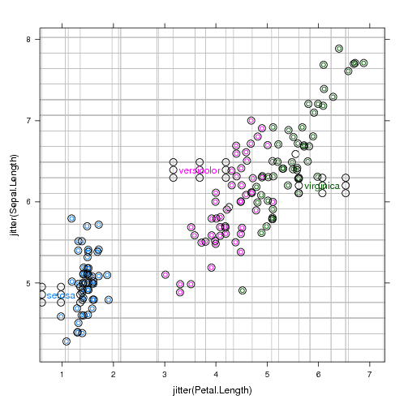

The modular design of the directlabels package separates the label position calculation from the label drawing. The label positions are calculated by a Positioning Method based on the data. On one hand, this allows much simpler labeling of everyday plots. You don't have to recode the position calculation for each of your plots; you just have to remember which Positioning Method to use.
On the other hand, the modular design of the directlabels package encourages the development of optimal label position algorithms. This page discusses some sophisticated techniques used by the included Positioning Methods.
The key to constructing optimal label positions is knowledge of exactly how large the label text will be before it is drawn. Fortunately, there are several grid functions that allow calculation of the label bounding box from the context of the plotting viewport. Then we use this information to construct Positioning Methods that are "smart" --- that is, they are aware of the label size, so labels do not collide with points or other labels.
For scatterplots, you can define optimal label positions as the points where none of the labels overlap any of the points, or each other, and each label is as close as possible to its cloud of points. More concretely, you can formulate this as an optimization problem, where you minimize the sum of squared distances from a label to the mean of the point cloud, subject to the non-overlapping constraint. However, this optimization problem is non-convex (hard), and so the following heuristic is used to give an approximate solution.
We iteratively do a grid search using a grid the size of the label bounding box, tiled over the whole plot. Then, we put the label in the empty box that is closest to the center of the point cloud. This is implemented in empty.grid.
p <- xyplot(jitter(Sepal.Length)~jitter(Petal.Length),iris,groups=Species) direct.label(p,smart.grid,TRUE)
Here you see the debugging output, which includes the grid used for the search in grey, and the points used for collision detection. After each label is placed, several points are added to the point cloud that is used for collision detection of the following labels. Thus, labels are guaranteed not to overlap each other or any points.
Lineplots are often most intuitively labeled on the side where the lines are more spread out. However, sometimes the lines are too close together, so the labels overlap (left). A fix is a small adjustment of the labels up or down if the labels are too close to each other (right).
|
|
Technically, the label positions on the right for the last.qp Positioning Method are calculated as a solution to the constrained optimization problem described in qp.labels. Essentially, we minimize the sum of squared differences between the last point and the label position, subject to the constraint that none of the labels overlap.
| Please send email to Toby Dylan Hocking if you are using directlabels or have ideas to contribute, thanks! |
| validate |